Suivi possible : spectrophotomètre, conductimètre…
![]()
Ajout de FeCl₃ dans H₂O₂ — solution jaune au départ
![]()
Solution rouge-orangé vif + effervescence O₂ + forte chaleur
![]()
Solution redevenue jaune — Fe³⁺ régénéré, non consommé
![]()
![]()
Ex : 2 I⁻ + S₂O₈²⁻ catalysé par Fe²⁺/Fe³⁺ — intermédiaire réactionnel → catalyseur régénéré.
Ne modifie PAS :
✗ État initial / état final
✗ Constante d'équilibre K
✗ Composition à l'équilibre
✗ La réaction reste la même
Conditions : [I⁻]₀ = 0,100 mol/L · [S₂O₈²⁻]₀ = 0,050 mol/L · T = 20°C · suivi par dosage de I₂
Objectif : suivre l'évolution de la réaction entre les ions peroxodisulfate S₂O₈²⁻ et iodure I⁻ (I⁻ en excès) par mesure de l'absorbance du diiode I₂ formé, afin de tracer [S₂O₈²⁻](t) et de tester la loi d'ordre 1.
- Spectrophotomètre (λ = 350 nm)
- Cuve, chronomètre
- Solutions S₂O₈²⁻ (0,020 mol/L) et KI (0,10 mol/L)
- Bécher, pipettes ou burettes
- Régler le zéro du spectrophotomètre à λ = 350 nm avec de l'eau distillée.
- Mélanger les volumes de S₂O₈²⁻ et de KI ; déclencher le chronomètre au mélange.
- Transvaser rapidement dans la cuve et relever A(t) toutes les 30 s.
- Reporter les mesures dans le tableau ci-dessous.
| t (s) | 0 | 30 | 60 | 90 | 120 | 150 |
|---|---|---|---|---|---|---|
| A ± 0,002 | ||||||
| [S₂O₈²⁻] (mol/L) |
À exploiter ensuite avec le graphique interactif ci-dessous et le sous-onglet "Loi de vitesse".
x(t) = quantité de matière ayant réagi par litre
x = [S₂O₈²⁻]₀ − [S₂O₈²⁻](t)
x_max = [S₂O₈²⁻]₀ = 0,050 mol/L
D'après la stœchiométrie :
[I⁻] = [I⁻]₀ − 2x
[S₂O₈²⁻] = [S₂O₈²⁻]₀ − x
[I₂] = x
Pourquoi choisit-on ici un suivi par spectrophotométrie plutôt qu'un simple prélèvement titré ?
v = −½ · d[I⁻]/dt
v = −d[S₂O₈²⁻]/dt
v = +d[I₂]/dt
v_réactif = v_produit = v · Unité : mol · L⁻¹ · min⁻¹
Sur le graphique ln([S₂O₈²⁻]) = f(t), obtenir une droite confirme que :
Condition d'équivalence stœchiométrique :
n(I⁻) / 2 = n(S₂O₈²⁻) / 1
En concentration (même volume V) :
[I⁻]₀ / 2 comparé à [S₂O₈²⁻]₀
Pourquoi utilise-t-on l'ion iodure I⁻ en large excès dans ce protocole ?
Objectif : mettre en œuvre une méthode physique (spectrophotométrie) pour suivre l'évolution d'une concentration au cours du temps et déterminer la vitesse volumique de disparition d'un réactif.
PP(aq) + HO⁻(aq) → PP⁻(aq) (PP⁻ incolore)
PP est ici le réactif limitant · λmax = 553 nm · ε = 2500 L·mol⁻¹·cm⁻¹
[PP] se calcule à partir de la loi de Beer-Lambert : A = ε·l·[PP], soit [PP] = A / (ε×l) avec l = 1 cm (largeur de cuve), donc [PP] = A / 2500.
| t (s) | A (553 nm) | [PP] (mol/L) |
|---|
Appuyez-vous sur la vidéo, le protocole et vos propres mesures (ou le tableau de référence ci-dessus) pour répondre. Vous pouvez changer vos réponses à tout moment avant de consulter la correction.
Objectif : à partir d'un tableau de mesures (t, c), utiliser un programme Python pour tracer la courbe de suivi cinétique, déterminer graphiquement la vitesse volumique et le temps de demi-réaction, puis tester l'hypothèse d'une réaction d'ordre 1 par régression linéaire de ln(c) = f(t).
Activité inspirée du manuel Hatier, Spécialité Physique-Chimie Terminale (chap. 4 p. 120).
tracecinetique.py — tracé de c = f(t) et repérage de t₁/₂Complétez la ligne créant la liste c0sur2 (tous ses termes valent c₀/2) afin de tracer la droite horizontale c = c₀/2 sur le même graphique, ce qui permet de repérer t₁/₂ à l'intersection avec la courbe.
cinetiqueordre1.py — test de l'ordre 1 par régression linéaireCe programme calcule ln(c), affiche les points ln(c) = f(t) (rouge) et la droite de régression (bleue), grâce à une fonction de régression linéaire écrite « à la main » (mêmes résultats que scipy.stats.linregress : coefficient directeur a, ordonnée b, coefficient de corrélation ρ).
Utilisez le bouton 🔄 Charger les données de la question 2 sur les deux programmes ci-dessus, puis relancez-les pour observer le résultat avec ce nouveau tableau :
| t (s) | 0 | 50 | 100 | 150 | 200 | 250 |
|---|---|---|---|---|---|---|
| c (mmol/L) | 1,80 | 1,75 | 1,60 | 1,04 | 0,31 | 0,10 |
tracecinetique.py, que faut-il modifier ?QCMcinetiqueordre1.py avec ce nouveau jeu de données, que peut-on conclure sur l'ordre de cette réaction ?QCMt₁/₂ est la durée au bout de laquelle
l'avancement atteint la moitié de sa valeur finale
ξ(t₁/₂) = ξ_max / 2
Ce qui équivaut à :
[A](t₁/₂) = [A]₀ / 2
[P](t₁/₂) = [P]_final / 2
Méthode graphique en 3 étapes :
① Repérer [A]₀/2 sur l'axe des ordonnées
② Tracer la droite horizontale jusqu'à [A](t)
③ Projeter verticalement → lire t₁/₂ sur l'axe des t
Unité : seconde (s) ou minute (min)
↑ T → vitesse ↑ → t₁/₂ ↓
Catalyseur → vitesse ↑ → t₁/₂ ↓
↑ [A]₀ → vitesse initiale ↑ mais t₁/₂ peut varier
Déplacez les curseurs pour observer ces effets.
C'est la date précise à laquelle [A] = [A]₀/2, quelle que soit la durée totale.
a) Déterminer t₁/₂ par interpolation entre les deux valeurs encadrantes.
b) La tangente à la courbe en t = 40 s passe approximativement par les points (20 s ; 0,70 mol/L) et (60 s ; 0,38 mol/L). Estimer la vitesse instantanée de disparition de A à t = 40 s.FCR
t (min) et A ([H₂O₂] en mol/L).PYTHONComplétez le script pour calculer [H₂O₂]₀/2, encadrer puis estimer t₁/₂ par interpolation linéaire.
À partir des mêmes données, complétez l'appel à matplotlib pour tracer la courbe [H₂O₂] = f(t).
🔬 Exercice avec simulation — Simulation cinétique
Choisissez une réaction, entrez les conditions expérimentales, lancez la simulation. Vous obtiendrez les courbes [A](t) et [P](t), le calcul automatique de t₁/₂, puis une vérification guidée étape par étape.
puis cliquez sur ▶ Lancer la simulation
pour voir apparaître les courbes et calculer t₁/₂.
Activités documentaires, expérimentales ou numériques de la séquence. Le type de chaque activité (📋 documentaire, 🧪 expérimentale ou 💻 numérique) est indiqué à côté du nom de son onglet.
Activité 1 : À l'épreuve du temps
Les œuvres d'art s'altèrent au cours du temps. Des facteurs cinétiques peuvent accélérer les dégradations qu'elles subissent.
Objectif : quels sont les facteurs cinétiques qui accélèrent ces dégradations ?
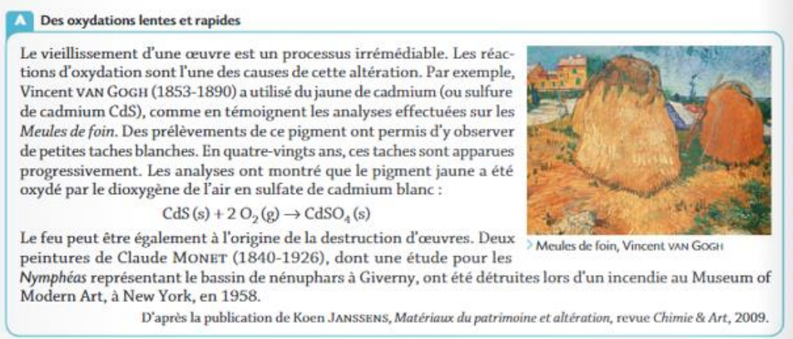
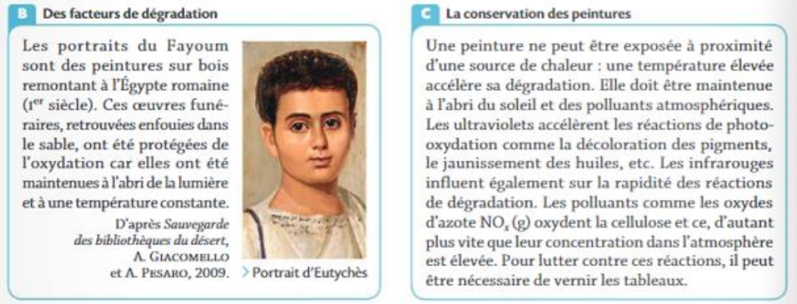
1. Citer une transformation lente et une transformation rapide pouvant altérer les œuvres d'art (doc A).
2. Pourquoi une combustion, telle que celle ayant détruit les Nymphéas de Monet, peut-elle être qualifiée d'oxydation ?
3. Pourquoi la température peut-elle être considérée comme un facteur cinétique ?
4. À quel facteur cinétique les rayonnements infrarouges peuvent-ils être associés ?
5. On note R-CH₂-OH(s) un fragment de cellulose. Établir l'équation de sa réaction d'oxydation en acide R-CO₂H(s), par le dioxyde d'azote. On donne : NO₂(g) / NO(g).
6. Citer la phrase du texte C qui montre que la concentration est un facteur cinétique.
7. Définir un facteur cinétique et en donner trois exemples.
1. Transformation lente : oxydation lente du jaune de cadmium par le dioxygène de l'air (apparition progressive des taches blanches en 80 ans). Transformation rapide : oxydation rapide lors de la combustion des Nymphéas (incendie de 1958).
2. Une combustion se produit en présence du dioxygène de l'air, qui est le comburant : les espèces brûlées (ici l'œuvre) sont donc oxydées par O₂, ce qui en fait bien une réaction d'oxydation.
3. D'après le doc C, une température élevée accélère la dégradation d'une peinture. Un facteur cinétique étant un paramètre qui modifie la vitesse d'une transformation, la température en est donc un.
4. Les rayonnements infrarouges peuvent être associés au facteur cinétique « température ».
5. RCH₂OH(s) + 2 NO₂(g) → RCO₂H(s) + 2 NO(g) + H₂O(g)
6. « Les polluants comme les oxydes d'azote NOₓ oxydent la cellulose et ce, d'autant plus vite que leur concentration dans l'atmosphère est élevée. »
7. Un facteur cinétique est un paramètre ayant une influence sur la vitesse d'une réaction (mais pas sur son état final). Exemples : la température, la concentration des réactifs, la présence d'un catalyseur.
Activité 2 : Détection médicale de diiode
La présence de diiode dans les urines est un signe de dysfonctionnement de la thyroïde. Le titrage du diiode dans un échantillon d'urine peut être réalisé en utilisant la ferroïne comme indicateur coloré. Il est cependant conseillé de réaliser le titrage « rapidement » car le milieu acide consomme la ferroïne.
Quel est l'ordre de grandeur du temps dont dispose un technicien médical pour réaliser un titrage utilisant la ferroïne en milieu acide ?
Ce dosage a déjà été réalisé en laboratoire ; le document ci-dessous rassemble les données et le protocole suivi. Votre travail consiste à exploiter les mesures obtenues.
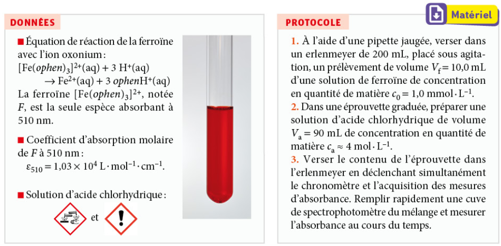
Mesures d'absorbance A à 510 nm au cours du temps (le point à t = 0 s n'est pas exploitable : le mélange n'est pas encore homogène dans la cuve)
| t (s) | 0 | 120 | 250 | 420 | 600 | 780 |
|---|---|---|---|---|---|---|
| A | 0 | 0,963 | 0,840 | 0,680 | 0,556 | 0,448 |
| t (s) | 960 | 1 140 | 1 320 | 1 500 | 1 680 | 1 860 |
|---|---|---|---|---|---|---|
| A | 0,338 | 0,301 | 0,231 | 0,162 | 0,140 | 0,102 |
a. Calculer la valeur de l'avancement maximal xmax.
n(H⁺)i = ca × Va = 4 × 90×10⁻³ = 0,36 mol, à comparer à n(F)i = c₀ × Vf = 1,0×10⁻³ × 10,0×10⁻³ = 1,0×10⁻⁵ mol. Comme 3 × n(F)i = 3,0×10⁻⁵ mol ≪ n(H⁺)i, l'ion oxonium est en très large excès : F est le réactif limitant.
xmax = n(F)i = c₀ × Vf = 1,0×10⁻³ × 10,0×10⁻³ = 1,0×10⁻⁵ mol = 0,010 mmol.
b. Exprimer la concentration en quantité de ferroïne [F], puis l'avancement x, en fonction de l'absorbance A.
D'après la loi de Beer-Lambert : A = ε₅₁₀ × ℓ × [F], avec ℓ = 1 cm, donc [F] = A / (ε₅₁₀ × ℓ) = A / (1,03×10⁴) (en mol·L⁻¹).
Le volume total du mélange est V = Vf + Va = 10,0 + 90 = 100 mL = 0,100 L. Comme x = n(F)i − n(F)(t) = c₀Vf − [F](t)×V :
x(t) = c₀×Vf − [F](t)×V, soit numériquement x(t) = 1,0×10⁻⁵ − 0,100×[F](t) (en mol), ou encore x(t) = 0,010 − 0,100×[F](t) si x et [F] sont exprimés en mmol et mmol·L⁻¹.
c. Justifier le choix du suivi spectrophotométrique pour réaliser le suivi temporel de cette transformation.
La ferroïne F est la seule espèce du milieu réactionnel à absorber à 510 nm : la mesure de l'absorbance A à cette longueur d'onde donne donc directement accès à [F], sans étape de dosage ni de prélèvement qui perturberait le système. Le suivi spectrophotométrique est de plus rapide et non destructif, ce qui permet des mesures répétées à intervalles rapprochés — adapté à une transformation qui évolue sur seulement quelques dizaines de minutes.
- STAT → 1:Edit… Entrer les temps t (s) dans L1 et les absorbances A dans L2.
- Se placer sur l'en-tête de L3, taper
L2/10,3puis Entrer : L3 contient alors [F] en mmol·L⁻¹ (car ε₅₁₀×ℓ = 1,03×10⁴, soit 10,3 pour des mmol·L⁻¹). - Sur l'en-tête de L4, taper
0,010-0,100×L3: L4 contient l'avancement x(t) en mmol (relation établie en 1.b). - 2nd + Y= (STAT PLOT) : activer Plot1 en nuage de points, Xlist = L1, Ylist = L4. Régler la fenêtre (WINDOW : Xmax ≈ 2000, Ymax ≈ 0,012) puis GRAPH.
- Repérer sur le graphe le palier xmax, tracer mentalement (ou avec 2nd + TRACE → 3:Horizontal) la droite d'ordonnée xmax/2, et lire l'abscisse t1/2 du point de la courbe situé à cette hauteur.
- Pour une vitesse à un instant donné : utiliser TRACE et lire les coordonnées de deux points encadrant l'instant visé, puis calculer le taux de variation Δ[F]/Δt entre ces deux points (méthode de la tangente approchée).
a. À l'aide de la calculatrice ou de Regressi, tracer x = f(t) à partir des données fournies.
La courbe obtenue croît puis tend vers un palier xmax = 0,010 mmol (cohérent avec la valeur calculée en 1.a) :
| t (s) | 120 | 250 | 420 | 600 | 780 | 960 | 1140 | 1320 | 1500 | 1680 | 1860 |
|---|---|---|---|---|---|---|---|---|---|---|---|
| x (mmol) | 0,00065 | 0,0018 | 0,0034 | 0,0046 | 0,0057 | 0,0067 | 0,0071 | 0,0078 | 0,0084 | 0,0086 | 0,0090 |
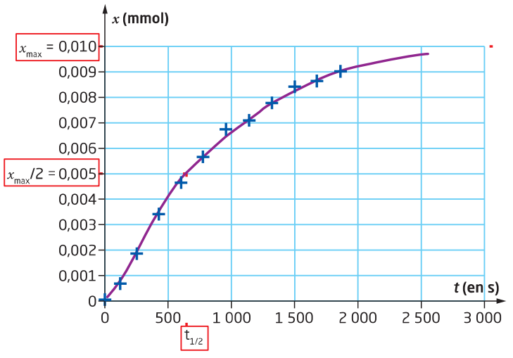
b. En admettant que la transformation est totale, déterminer le temps de demi-réaction, noté t1/2, tel que x(t1/2) = xmax/2, où xf est l'avancement final de la transformation.
xmax/2 = 0,010/2 = 0,005 mmol. Cette valeur est atteinte entre t = 600 s (x = 0,0046 mmol) et t = 780 s (x = 0,0057 mmol). Par interpolation linéaire :
t1/2 ≈ 600 + (0,005−0,0046)/(0,0057−0,0046) × (780−600) ≈ 670 s (soit environ 11 minutes).
a. La vitesse volumique de consommation de la ferroïne s'exprime comme vc,F(t) = −d[F]/dt. Par analyse dimensionnelle, déterminer une unité de la vitesse volumique de consommation de la ferroïne.
[F] s'exprime en mol·L⁻¹ et t en s, donc d[F]/dt s'exprime en mol·L⁻¹·s⁻¹. La vitesse volumique de consommation vc,F(t) a donc pour unité le mol·L⁻¹·s⁻¹ (ou, de façon équivalente ici, le mmol·L⁻¹·s⁻¹).
b. Calculer la vitesse volumique de consommation de la ferroïne aux dates t₀ = 0 s et t₁ = 1000 s.
À t₀ = 0 s (début de la transformation), la tangente est proche de la sécante entre (0 s ; 0,100 mmol·L⁻¹) et (120 s ; 0,0935 mmol·L⁻¹) :
vc,F(0) ≈ |0,0935−0,100| / 120 ≈ 5,4×10⁻⁵ mmol·L⁻¹·s⁻¹ ≈ 5×10⁻⁸ mol·L⁻¹·s⁻¹.
À t₁ = 1000 s, en utilisant les points encadrants (960 s ; 0,0328 mmol·L⁻¹) et (1140 s ; 0,0292 mmol·L⁻¹) :
vc,F(1000) ≈ |0,0292−0,0328| / 180 ≈ 2,0×10⁻⁵ mmol·L⁻¹·s⁻¹ ≈ 2×10⁻⁸ mol·L⁻¹·s⁻¹.
Valeurs approchées : la précision dépend du tracé (calculatrice) ou du calcul (Regressi) — un ordre de grandeur cohérent suffit. On retrouve bien que la vitesse diminue au cours du temps, la ferroïne se raréfiant progressivement.
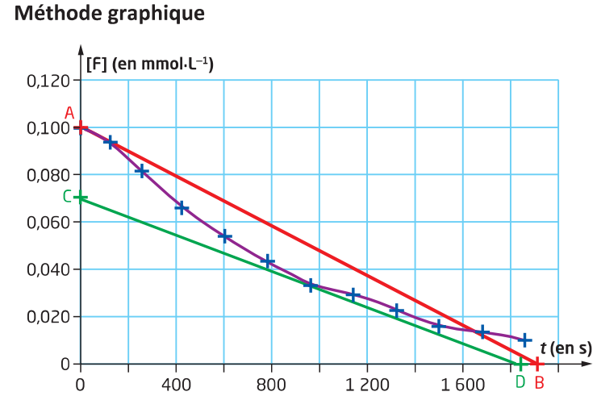
Activité 3 : TP n°15 — Cinétique de décoloration de la phénolphtaléine
La phénolphtaléine est un indicateur coloré incolore en milieu neutre ou acide, qui vire au rose en milieu fortement basique. Mais au bout de quelques minutes, la coloration rose disparaît ! En effet, une réaction lente décompose la phénolphtaléine rose, notée PP, suivant l'équation :
PP(aq) + HO⁻(aq) → PP⁻(aq)
où PP⁻ est une espèce organique incolore. Ici, PP est le réactif limitant.
Données : λmax = 553 nm (maximum d'absorption de PP) ; ε = 2500 L·mol⁻¹·cm⁻¹.
Objectif : mettre en œuvre une méthode physique pour suivre l'évolution d'une concentration et déterminer la vitesse volumique de disparition d'un réactif.
- Spectrophotomètre (multispectro) + logiciel Visual Spectra
- Cuve pour spectrophotomètre, pipette jetable
- Solution de soude à 0,5 mol·L⁻¹, éprouvette graduée
- Phénolphtaléine, bécher, chronomètre (smartphone)
- Ordinateur avec Regressi
- Ouvrir Visual Spectra. Étalonner le spectrophotomètre : allumer la lampe, faire le blanc puis le noir, puis cliquer sur « Absorbance ».
- Verser environ 5 mL de soude à 0,5 mol·L⁻¹ dans un bécher, à l'aide d'une éprouvette graduée.
- Ajouter environ 1 goutte de phénolphtaléine (ne pas saturer le spectrophotomètre), agiter.
- Remplir aux 3/4 une cuve à l'aide d'une pipette jetable, la placer dans le boîtier et déclencher le chronomètre.
- Mesurer A₅₅₃ toutes les 15 s ; arrêter lorsque A ne varie presque plus. Entrer les valeurs sur Regressi au fur et à mesure (fenêtres Visual Spectra et Regressi l'une à côté de l'autre), et les noter aussi sur votre feuille au cas où.
🎥 Tutoriel — Utilisation du multispectro (Jeulin)
Étalonnage et mesure de l'absorbance avec le spectrophotomètre
🎥 Export et exploitation des données sur Regressi
Récupérer les mesures du spectrophotomètre et les traiter sur Regressi
Feuille de secours — à compléter en parallèle de la saisie sur Regressi (poursuivre sur votre propre feuille si la réaction se prolonge au-delà) :
| t (s) | 0 | 15 | 30 | 45 | 60 | 75 | 90 | 105 | 120 | 135 |
|---|---|---|---|---|---|---|---|---|---|---|
| A |
1. Mesurer la valeur de l'absorbance A₅₅₃ toutes les 15 s. Arrêter la manipulation lorsque A ne varie presque plus.
2. Créer une nouvelle colonne de valeurs sur Regressi [PP], la concentration en phénolphtaléine. Expliquer la marche à suivre.
3.1. Tracer [PP] = f(t) puis essayer de modéliser cette fonction.
3.2. Pouvez-vous faire une hypothèse sur l'ordre de la loi de vitesse ?
4. Déterminer le temps de demi-réaction graphiquement. Expliquer et montrer les traits de construction sur l'allure de la courbe question 3.1.
5.1. La vitesse volumique de consommation de la PP s'exprime comme vPP(t) = −d[PProse]/dt. Par analyse dimensionnelle, déterminer une unité de la vitesse volumique.
5.2. Par une méthode graphique, calculer cette vitesse aux dates t₀ = 60 s et t₁ = 1000 s. Expliquer la méthode.
6.1. Tracer ln[PP] = f(t) et modéliser la fonction. Donner son équation.
6.2. Que pouvez-vous dire de la loi de vitesse ? Justifier.
6.3. Retrouver la valeur de t₁/₂ grâce à l'équation de ln[PP] = f(t).
Activité 4 : Tracé de suivi cinétique, test d'ordre 1
L'étude cinétique expérimentale d'une réaction chimique en solution produit un tableau donnant une concentration c en fonction du temps t. Un programme Python permet de faciliter l'exploitation graphique et numérique de ce tableau.
Objectif : effectuer le tracé d'une courbe à partir d'un tableau de valeurs, tester l'hypothèse d'une réaction d'ordre 1.
Activité inspirée du manuel Hatier, Spécialité Physique-Chimie Terminale (chap. 4 p. 120). Les programmes ci-dessous s'exécutent directement dans le navigateur (Python simplifié, sans numpy/scipy — même méthode et mêmes résultats).
a. Lancer le programme tracecinetique.py ci-dessous (valeurs par défaut). Imprimer/observer le graphique obtenu.
listet et listec déjà renseignées.b. En traçant les tangentes à la courbe c = f(t) aux instants t = 0, 10 et 30 min, comment évolue la vitesse volumique de disparition v = −dc/dt au cours du temps ?
c. Compléter le programme ci-dessus (ligne c0sur2 = [_____ ...]) afin que tous ses termes valent c₀/2, puis ajouter une ligne traçant cette liste en fonction de listet sur le même graphique (même instruction que pour listec). Relancer le programme et déterminer graphiquement t1/2.
c0 = listec[0]) : remplacez le blanc par c0/2. Pour tracer la droite horizontale, ajoutez ensuite une ligne plt.plot(listet, c0sur2, color="green") juste après la définition de c0sur2 (avant plt.title). t1/2 se lit à l'abscisse du point où les deux courbes se croisent.d. Si la réaction est d'ordre 1, alors c(t) = c₀×e⁻ᵏᵗ. En déduire que ln(c) = ln(c₀) − k×t.
cinetiqueordre1.py — test de l'ordre 1Ce programme calcule ln(c), affiche les points ln(c) = f(t) (rouge) et la droite de régression (bleue), grâce à une fonction de régression linéaire écrite « à la main » (mêmes résultats que scipy.stats.linregress : coefficient directeur a, ordonnée b, coefficient de corrélation ρ).
e. Lancer le programme cinetiqueordre1.py. Par comparaison entre la droite de régression et la courbe ln(c) en fonction de t, expliquer pourquoi l'hypothèse d'une réaction d'ordre 1 peut être validée. Déduire des résultats de la régression linéaire la valeur de la constante de vitesse k.
f. Le coefficient de corrélation linéaire ρ est un indicateur numérique qui traduit l'alignement des points : plus il est proche de 1 en valeur absolue, plus l'écart entre la courbe et la droite de régression est correct. Pourquoi ρ est-il un bon indicateur permettant de valider l'ordre 1 d'une réaction ?
| t (en s) | 0 | 50 | 100 | 150 | 200 | 250 |
|---|---|---|---|---|---|---|
| c (mmol·L⁻¹) | 1,80 | 1,75 | 1,60 | 1,04 | 0,31 | 0,10 |
a. Tracer la courbe c en fonction de t grâce au programme tracecinetique.py (bouton « 🔄 Charger les données de la question 2 » ci-dessus).
listet/listec dans l'éditeur du programme tracecinetique.py ci-dessus. Il ne reste plus qu'à cliquer sur ▶ Exécuter (la ligne c0sur2 reste à compléter comme en 1.c si vous souhaitez repérer t1/2 pour ce nouveau jeu de données).b. Grâce au programme cinetiqueordre1.py (bouton « 🔄 Charger les données de la question 2 » ci-dessus), déterminer si la réaction est d'ordre 1 dans ces nouvelles conditions expérimentales.
cinetiqueordre1.py, exécutez, puis examinez l'alignement des points et la valeur de ρ. Une valeur de ρ nettement plus éloignée de 1 (en valeur absolue) qu'à la question 1 indiquerait que l'hypothèse d'ordre 1 n'est plus valable pour ce jeu de données.Activité 5 : Biodégradabilité d'une paraffine
Les paraffines chlorées sont des espèces chimiques produites lors de la fabrication des matières plastiques. Elles sont considérées comme des polluants de l'eau de mer. Afin d'établir les réglementations les concernant, il est nécessaire d'étudier leur vitesse de dégradation dans l'eau.
Existe-t-il une relation simple entre la vitesse volumique de consommation d'une espèce chimique et sa concentration ?
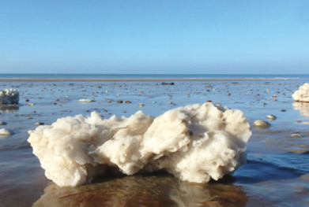
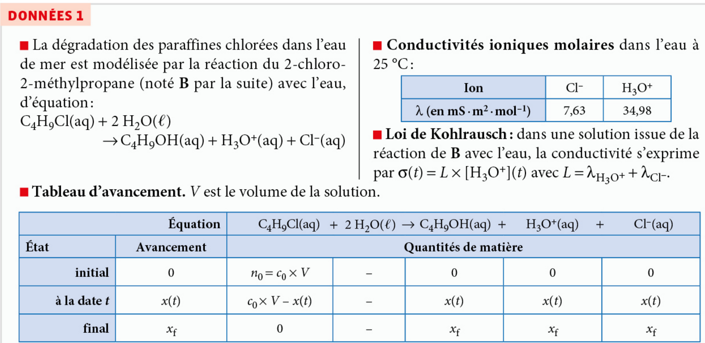
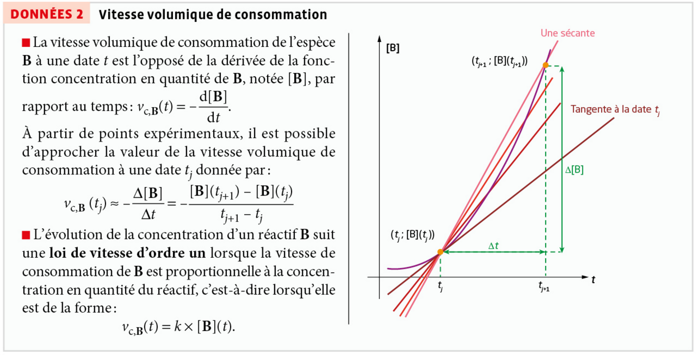
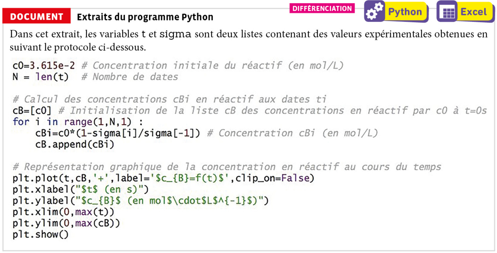
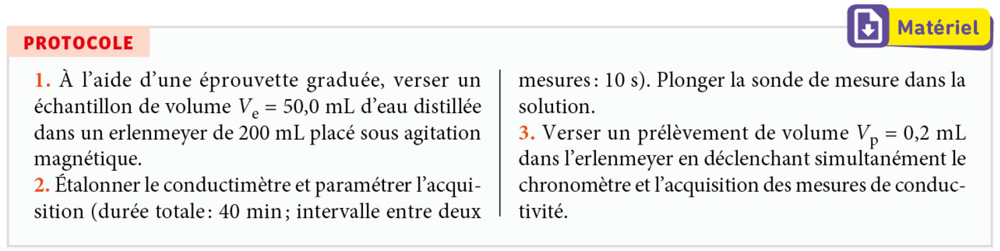
a. Exprimer l'avancement x(t) et l'avancement final xf de la réaction en fonction de la conductivité σ, σf et de grandeurs constantes.
b. Justifier précisément le calcul de cBi à la date ti dans l'extrait de code du document ci-dessous.
cBi = c0*(1-sigma[i]/sigma[-1]) du programme (avec sigma[-1] qui désigne la dernière valeur de la liste, donc σf).c. Réaliser le protocole ci-dessus (ou utiliser les données expérimentales déjà intégrées ci-dessous).
d. À l'aide du programme Python ci-dessous, calculer la vitesse volumique de consommation de B à la date de chaque mesure expérimentale (sauf la dernière).
cB[i+1]-cB[i] et t[i+1]-t[i] donnent directement ces différences ; la boucle doit s'arrêter avant le dernier indice (il n'y a pas de ti+1 après la dernière mesure), d'où range(N-1).e. Tracer le nuage de points [B] au cours du temps, et celui de la vitesse volumique de consommation de B au cours du temps.
cB et vB correctement calculées, les deux graphiques s'affichent automatiquement après exécution — aucune ligne supplémentaire à écrire pour cette question.a. Comparer les représentations graphiques obtenues à la question précédente pour établir une relation simple entre [B](t) et vc,B(t).
b. Tester cette relation, puis d'autres relations simples, afin de déterminer la plus pertinente.
c_B (la liste des concentrations [B], réduite de son dernier terme pour avoir autant de valeurs que vB). Le programme teste alors deux modèles : vc,B = a₁×[B] + b₁ et vc,B = a₂×[B]² + b₂. Comparez ensuite l'alignement des points sur les deux graphiques obtenus.Programme Python — les données expérimentales de conductivité sont déjà intégrées (mêmes valeurs que le fichier C03_act3_data.txt) :
a. Modéliser les résultats obtenus pour justifier votre choix.
b. Préciser si les vitesses de consommation suivent la loi de vitesse d'ordre 1 pour la transformation étudiée.
1.a. D'après la loi de Kohlrausch, [H₃O⁺](t) = σ(t)/L. Comme x(t) = n(H₃O⁺)(t) = [H₃O⁺](t)×V (tableau d'avancement), on obtient x(t) = σ(t)×V/L, et de même à l'état final : xf = σf×V/L (avec L = λH₃O⁺ + λCl⁻).
1.b. D'après le tableau d'avancement, [B](t) = (n₀ − x(t))/V = c₀ − x(t)/V. B étant le réactif limitant, xf = n₀ = c₀×V. En combinant avec 1.a : [B](t) = c₀ − (σ(t)×V/L)/V = c₀×(1 − σ(t)/(c₀×L)). Or c₀×L = σf (puisque xf=n₀ correspond à σf), d'où [B](t) = c₀×(1 − σ(t)/σf) — exactement la ligne cBi = c0*(1-sigma[i]/sigma[-1]) du programme, sigma[-1] étant la dernière valeur mesurée (assimilée à σf).
1.d/e, 2.a/b, 3.a/b. Le nuage vc,B = f([B]) est bien mieux aligné sur une droite passant quasiment par l'origine (coefficient de corrélation ≈ 0,99) que le nuage vc,B = f([B]²) (coefficient de corrélation plus faible, ≈ 0,94). La relation la plus pertinente est donc vc,B(t) = k×[B](t), avec k ≈ a₁ ≈ 6,4×10⁻³ s⁻¹ : la transformation suit bien une loi de vitesse d'ordre 1.
📥 Pour travailler sur votre ordinateur (Anaconda / Spyder), avec le fichier de données correspondant :
Exercice 12 — Choisir un capteur
Pour chaque réaction (a, b, c ou d), proposer un ou plusieurs capteurs adaptés au suivi temporel de la transformation modélisée parmi les capteurs suivants : spectrophotomètre ; conductimètre ; pH-mètre ; manomètre ; thermomètre. Justifier.
DONNÉE : toutes les espèces chimiques évoquées conduisent à des solutions incolores, sauf le diiode.
a. 2 I⁻(aq) + S₂O₈²⁻(aq) → I₂(aq) + 2 SO₄²⁻(aq)
b. 2 H₂O₂(aq) → 2 H₂O(ℓ) + O₂(g)
c. 4 PH₃(g) → P₄(g) + 6 H₂(g)
d. CaCO₃(s) + 2 H⁺(aq) → Ca²⁺(aq) + CO₂(g) + H₂O(ℓ)
a. Le diiode I₂ est, d'après la donnée, la seule espèce colorée de cette réaction : c'est un produit. Sa formation peut donc être suivie par spectrophotométrie (l'absorbance de la solution augmente au fur et à mesure que I₂ se forme).
b. Le dioxygène O₂(g) est le seul produit gazeux, formé à partir de réactifs en solution aqueuse : dans un récipient fermé à volume constant, sa formation entraîne une augmentation de la pression. Un manomètre est donc adapté à ce suivi.
c. Toutes les espèces sont gazeuses et incolores : le spectrophotomètre, le conductimètre et le pH-mètre ne conviennent pas. Le nombre total de moles de gaz passe de 4 (réactifs) à 1 + 6 = 7 (produits) : à volume constant, la pression totale augmente. Un manomètre est donc adapté.
d. Deux capteurs conviennent ici : un manomètre, car du CO₂(g) se forme (augmentation de pression en récipient fermé) ; et un conductimètre, car la composition ionique de la solution évolue (l'ion H⁺(aq), très mobile, est consommé, tandis que l'ion Ca²⁺(aq), moins mobile, apparaît — la conductivité de la solution diminue au cours du temps).
Exercice 28 — Modéliser un nuage de points
La décomposition de l'iodure d'hydrogène est modélisée par la réaction d'équation :
2 HI(g) → H₂(g) + I₂(g)
Le suivi temporel de cette transformation donne, à 580 K, les résultats suivants :
| Temps (en s) | 0 | 1000 | 2000 | 3000 | 4000 |
|---|---|---|---|---|---|
| [HI] (en mol·L⁻¹) | 1,000 | 0,110 | 0,061 | 0,041 | 0,031 |
La concentration en quantité de matière d'une espèce gazeuse est définie comme celle d'une espèce dissoute : [HI] = nHI/V où V est le volume du gaz et [HI]₀ = [HI](0).
a. Calculer, pour chaque date ci-dessus, ln([HI](t)/[HI]₀).
b. À l'aide d'une représentation graphique, déterminer si l'évolution de la concentration en iodure d'hydrogène suit une loi de vitesse d'ordre un.
a. Avec [HI]₀ = 1,000 mol·L⁻¹ :
• t = 0 s : ln(1,000/1,000) = ln(1) = 0
• t = 1000 s : ln(0,110/1,000) = ln(0,110) ≈ −2,21
• t = 2000 s : ln(0,061/1,000) = ln(0,061) ≈ −2,80
• t = 3000 s : ln(0,041/1,000) = ln(0,041) ≈ −3,19
• t = 4000 s : ln(0,031/1,000) = ln(0,031) ≈ −3,47
b. En plaçant ces points sur un graphique ln([HI]/[HI]₀) = f(t), on obtient :
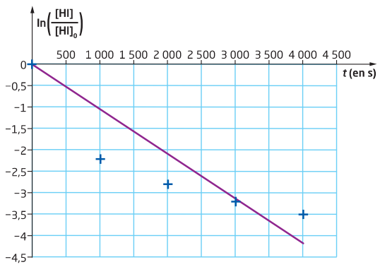
On constate que les points ne sont pas bien alignés avec une droite passant par l'origine : le premier point (t = 1000 s, ln ≈ −2,21) se situe nettement en dessous de la droite qui relierait au mieux les autres points, et l'écart entre les points et une telle droite reste marqué aux dates suivantes. La chute est en réalité très rapide entre t = 0 et t = 1000 s (ln passe de 0 à −2,21), puis se ralentit fortement ensuite (ln ne varie plus que de −2,21 à −3,47 sur les 3000 s restantes) — ce comportement n'est pas celui d'une droite.
Or une loi de vitesse d'ordre un implique que le nuage de points ln([HI]/[HI]₀) = f(t) soit correctement modélisé par une droite passant par l'origine. Ce n'est pas le cas ici : les points s'écartent visiblement d'un tel alignement. L'évolution de la concentration en iodure d'hydrogène à 580 K ne suit donc pas une loi de vitesse d'ordre un.
Exercice 35 — Retour sur la vidéo-débat
b. Écrire l'équation de la réaction modélisant l'oxydation de l'ion iodure par l'ion peroxodisulfate, notée (Rlente).
c. Dès que le diiode est formé, il est presque instantanément réduit par l'ion thiosulfate en ion iodure. Écrire l'équation de réaction de cette seconde transformation, notée (Rtrès rapide).
d. Calculer les concentrations en quantité de matière initiales en ion iodure et en ion peroxodisulfate dans les divers mélanges.
e. Interpréter l'évolution de la durée d'apparition de la coloration bleue mesurée pour les différents mélanges.
b. L'ion peroxodisulfate est réduit en ion sulfate (S₂O₈²⁻ + 2 e⁻ → 2 SO₄²⁻) et l'ion iodure est oxydé en diiode (2 I⁻ → I₂ + 2 e⁻). En additionnant ces deux demi-équations (les électrons s'annulent) :
(Rlente) : S₂O₈²⁻(aq) + 2 I⁻(aq) → I₂(aq) + 2 SO₄²⁻(aq)
c. Le diiode est réduit en ion iodure (I₂ + 2 e⁻ → 2 I⁻) et l'ion thiosulfate est oxydé en ion tétrathionate (2 S₂O₃²⁻ → S₄O₆²⁻ + 2 e⁻). En additionnant ces deux demi-équations :
(Rtrès rapide) : I₂(aq) + 2 S₂O₃²⁻(aq) → 2 I⁻(aq) + S₄O₆²⁻(aq)
d. Le volume total de chaque mélange vaut : Vtotal = VI + VA + VT + VE + VP = 30 + 1,0 + (VT+VE) + 30, avec VT + VE = 6,0 mL identique dans les cinq erlenmeyers. Donc Vtotal = 30 + 1,0 + 6,0 + 30 = 67,0 mL, le même pour les cinq mélanges.
Par conservation de la quantité de matière lors du mélange :
[I⁻]₀ = cI×VI/Vtotal = (0,15 × 30)/67,0 ≈ 6,7×10⁻² mol·L⁻¹
[S₂O₈²⁻]₀ = cP×VP/Vtotal = (0,15 × 30)/67,0 ≈ 6,7×10⁻² mol·L⁻¹
Ces deux concentrations initiales sont identiques et constantes d'un erlenmeyer à l'autre : seule la quantité de matière initiale en ion thiosulfate varie (via VT).
e. Tant qu'il reste de l'ion thiosulfate dans le mélange, tout le diiode formé par (Rlente) est aussitôt consommé, presque instantanément, par (Rtrès rapide) : la solution reste donc incolore. La couleur bleue n'apparaît que lorsque tout l'ion thiosulfate initialement présent a été consommé.
Comme [I⁻]₀ et [S₂O₈²⁻]₀ sont identiques dans les cinq mélanges (question d.), la réaction (Rlente) produit le diiode à une vitesse initiale sensiblement la même dans chaque erlenmeyer. La durée nécessaire pour consommer tout le thiosulfate — et donc pour voir apparaître la couleur bleue — augmente avec la quantité initiale de thiosulfate, c'est-à-dire avec VT : cette durée doit donc croître de l'erlenmeyer 1 (VT = 1,0 mL) à l'erlenmeyer 5 (VT = 5,0 mL). On retrouve le principe d'une réaction chronométrique (« horloge à l'iode »), où le temps d'apparition de la coloration est directement relié à la quantité initiale du réactif limitant introduit en plus faible proportion.
Contrôle de l'ordre d'une réaction
Le miel et les abeilles
L'érythrosine, colorant alimentaire
Dégradation d'un produit de contraste
Facteurs cinétiques
- Transformation lente : de quelques secondes à plusieurs jours
- Transformation rapide : quasi instantanée, difficile à suivre sans dispositif spécifique
- Facteurs cinétiques : température ↑, concentration des réactifs ↑ → réaction plus rapide
- État de division (systèmes hétérogènes) : plus divisé → plus rapide (surface de contact ↑)
Catalyse
- Catalyseur : accélère une réaction sans être consommé, sans modifier K ni l'état final
- Catalyse homogène : catalyseur et réactifs dans la même phase
- Catalyse hétérogène : catalyseur dans une phase différente (souvent solide)
- Catalyse enzymatique : catalyseur biologique (enzyme), très sélectif et efficace
Suivi temporel
- Choix du capteur adapté : spectrophotomètre, conductimètre, pH-mètre...
- Vitesse volumique de disparition d'un réactif / d'apparition d'un produit = pente de c = f(t)
- Tangente à la courbe en un instant t : donne la vitesse instantanée
- Loi de vitesse d'ordre 1 : ln(c) fonction affine du temps
Temps de demi-réaction t₁/₂
- Durée au bout de laquelle l'avancement atteint la moitié de sa valeur finale
- Détermination graphique à partir de c = f(t) ou x = f(t)
- t₁/₂ court → réaction rapide ; t₁/₂ long → réaction lente
- Permet de comparer des réactions sans connaître la loi de vitesse
- Transformation lente / rapide
- Une transformation lente peut être suivie à l'œil nu ou à l'aide d'un dispositif de mesure ; une transformation rapide semble instantanée (durée inférieure à la seconde).
- Facteur cinétique
- Paramètre physico-chimique (température, concentration, état de division) qui influence la vitesse à laquelle une transformation chimique se déroule, sans changer son état final.
- Catalyseur
- Espèce chimique qui augmente la vitesse d'une réaction sans apparaître dans son équation-bilan ni être consommée ; elle ne modifie ni la constante d'équilibre K, ni l'état final du système.
- Catalyse homogène / hétérogène / enzymatique
- Homogène : catalyseur dans la même phase que les réactifs. Hétérogène : catalyseur dans une phase différente. Enzymatique : catalyseur biologique (enzyme), très sélectif.
- Vitesse volumique de disparition / d'apparition
- Dérivée par rapport au temps de la concentration d'un réactif (avec un signe −) ou d'un produit ; s'obtient graphiquement par la pente de la tangente à la courbe c = f(t).
- Loi de vitesse d'ordre 1
- Loi selon laquelle la vitesse de disparition d'un réactif est proportionnelle à sa concentration ; se traduit graphiquement par une évolution affine de ln(c) en fonction du temps.
- Temps de demi-réaction t1/2
- Durée au bout de laquelle l'avancement de la réaction est égal à la moitié de l'avancement final ; se détermine graphiquement à partir de c = f(t) ou x = f(t).
- Intermédiaire réactionnel
- Espèce chimique formée puis consommée au cours d'une transformation, absente de l'équation-bilan globale (ex. : le catalyseur régénéré en catalyse homogène).
- État de division
- Degré de fragmentation d'un solide (morceau, poudre, copeaux…) : plus il est divisé, plus la surface de contact avec les autres réactifs est grande, ce qui accélère la réaction.
- Choc efficace
- Choc entre deux entités réactives qui, du fait d'une orientation favorable et d'une énergie suffisante, aboutit effectivement à une transformation chimique. La concentration augmente leur fréquence, la température augmente leur fréquence et la proportion de chocs suffisamment énergétiques.
- Vitesse instantanée
- Valeur de la vitesse volumique à un instant t précis, donnée par la pente de la tangente à la courbe c = f(t) en ce point (à distinguer de la vitesse moyenne, calculée entre deux instants).
- Tangente à une courbe
- Droite qui touche localement la courbe en un point sans la traverser ; sa pente en un point donne la vitesse instantanée à l'instant correspondant.
- Avancement (x) / avancement volumique (y)
- Grandeur qui mesure la progression d'une réaction chimique ; relié aux concentrations des espèces par les nombres stœchiométriques de l'équation-bilan (tableau d'avancement).
- Ordre d'une réaction
- Exposant(s) auxquels sont élevées les concentrations dans la loi de vitesse expérimentale d'une réaction. Pour une réaction d'ordre 1 par rapport à un réactif A, la vitesse est proportionnelle à [A].
- Constante de vitesse k
- Coefficient de proportionnalité de la loi de vitesse (par exemple v = k×[A] pour un ordre 1) ; son unité dépend de l'ordre de la réaction (s⁻¹ pour un ordre 1).
- Interpolation linéaire
- Méthode qui estime une valeur intermédiaire entre deux points de mesure encadrants, en supposant une évolution proportionnelle (affine) entre ces deux points.
⚗ Facteur cinétique — Température
PCCL · Animation (nécessite Flash Player — non fonctionnelle dans les navigateurs actuels)
⚗ Facteur cinétique — Concentration
PCCL · Animation (nécessite Flash Player — non fonctionnelle dans les navigateurs actuels)
⚗ Avancement d'une réaction chimique
Ostralo · Simulation interactive pour construire le tableau d'avancement et visualiser l'évolution des quantités de matière
🎬 Schéma animé — Cinétique chimique
Hatier Clic · Animation du cours (fichier vidéo mp4)
▶ Cinétique chimique — Cours complet
Paul Olivier · Vitesse volumique, temps de demi-réaction, facteurs cinétiques, catalyseurs
▶ Loi de vitesse d'ordre 1 ? — Exercice bac
Paul Olivier · Identifier si l'évolution d'une concentration suit une loi d'ordre 1
▶ Cours 4 — Cinétique chimique
Stella · Constitution et transformations de la matière, programme Terminale spé
▶ Cours 6 — Cinétique chimique
Stella · Le temps en chimie